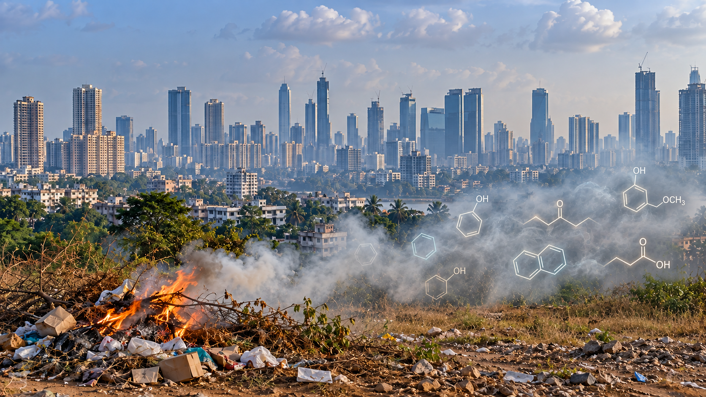

COMBUSTION EMISSIONS
Reactive organic emissions from open burning activities
We investigate emissions of complex organic mixtures from open burning events in urban and rural areas to constrain their environmental impacts.
VOCsVCPsUrban outflow
